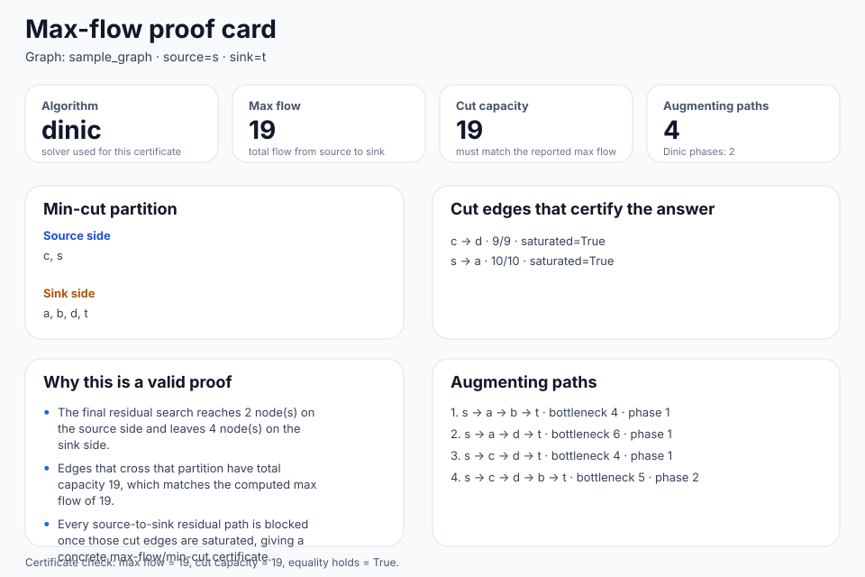
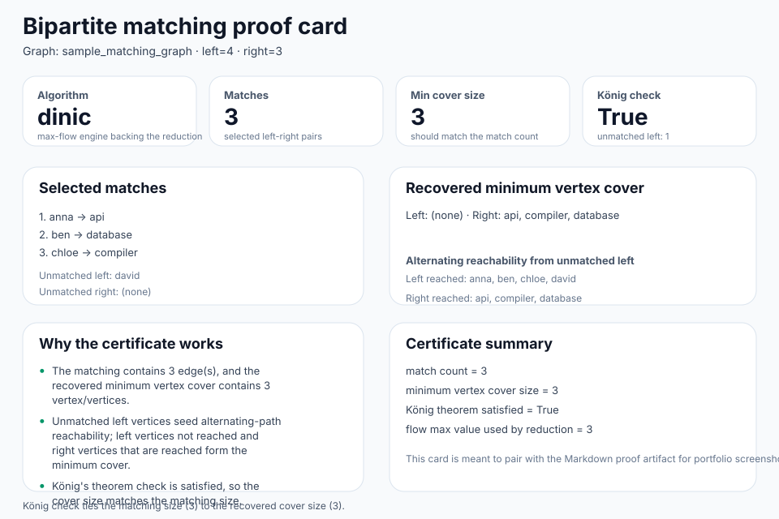
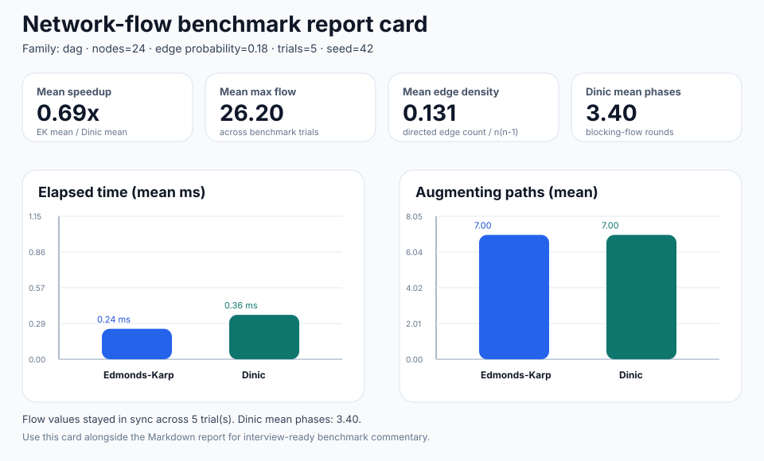
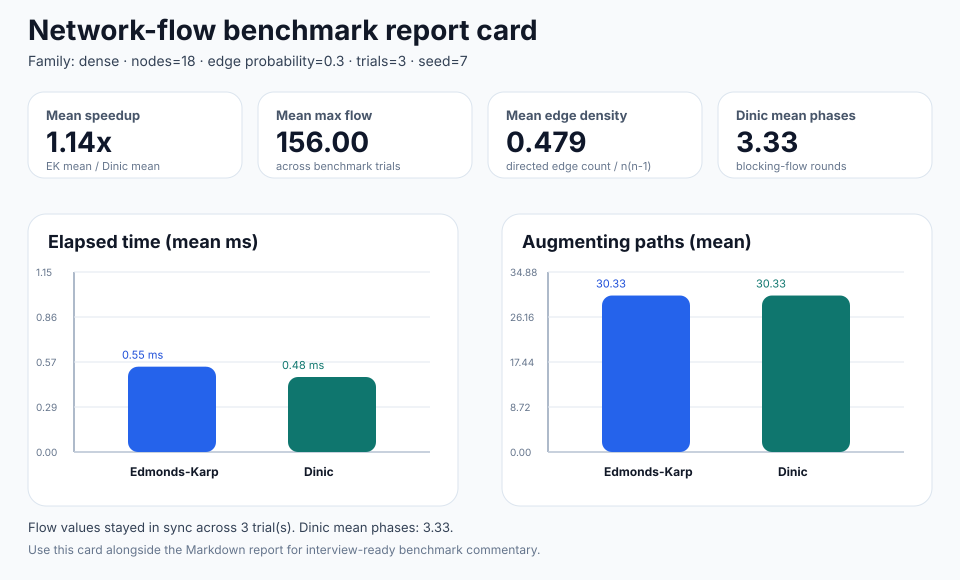
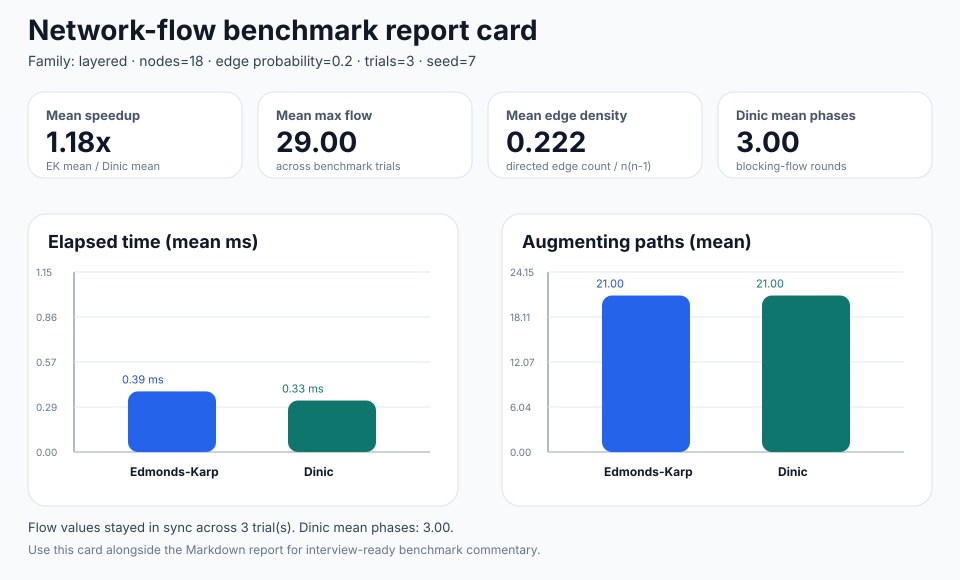

Core proof
Max-flow proof card
Lead with this when you want the pure Edmonds-Karp / Dinic correctness story without extra reductions.
proofsvgmarkdownjson

A single browser-friendly hub for the committed network-flow-lab artifacts. Use the filters to jump between proof cards, HTML walkthroughs, DOT-backed optimization demos, and benchmark reports without digging through the repo tree. The two gallery pages are still linked directly when you want a broader optimization-only or benchmark-only view.
Quick filters — cards stay visible when they match the selected tag.
Core proof
Lead with this when you want the pure Edmonds-Karp / Dinic correctness story without extra reductions.

Core proof
Shows the matching-to-flow reduction and the minimum vertex-cover follow-up in one interviewer-friendly artifact.

Optimization walkthrough
Browser-friendly assignment story with the HTML walkthrough, proof SVG, Markdown explanation, and DOT diagram grouped together.
Optimization walkthrough
Use this when the same engine needs to look like a shipping/routing optimization demo instead of a bipartite assignment reduction.
Benchmark report
The simplest performance story: a clean acyclic baseline before the denser residual-heavy families.

Benchmark report
Best for showing rerouting pressure and how the algorithm traces diverge once the graph gets messy.

Benchmark report
The strongest companion when you want a blocking-flow / cut-heavy performance follow-up beside the optimization walkthroughs.

{kind=link}
{kind=link}
{kind=link}
{kind=link}
{kind=link}
{kind=link}
{kind=link}